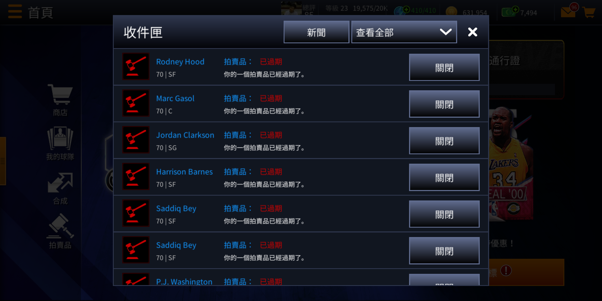

玩遊戲有些時候，常常需要一直點、一直點、一直點，實在有夠浪費時間⋯⋯
像我玩 NBA LIVE 的時候，每次拍賣過期的物品都要一個一個去關閉，而且每個點完還需要再等大概 3 秒才能再點下一個！
試算一下，如圖，我還有 96 個還沒關閉，一個以 3 秒來計算，96 * 3 = 288 秒，我得花快 5 分鐘才能全部點完，而且是要一直手點哦！

幸好，無意間在網路上找到了「How you can Control your Android Device with Python」這篇文，解救了我的時間，也讓我大開眼界～
裝 adb
adb 是什麼呢？
官方文檔上是這樣寫的：
Android Debug Bridge (adb) is a versatile command-line tool that lets you communicate with a device.
用 Homebrew 裝
1 | brew install android-platform-tools |
當你在終端機輸入 adb 有秀出東西就代表裝成功了！
（其他安裝方式可以參考這一篇）
裝 pure-python-adb
它是什麼？
可以把它想成，這個套件可以讓我們透過 Python，用更簡單地方式來和 adb 做溝通。
也就是能用更高階的 interface，去操作底層的東西。
用 pip 裝
1 | pip install pure-python-adb |
手機端的設置
啟用開發人員選項
以我的 HTC U11 plus 為例：
設定 → 系統 → 關於手機 → 軟體資訊 → 更多 → 連續點 7 下「版本號碼」
允許連接 USB 時進入偵錯模式
設定 → 系統 → 開發人員選項 → 開啟「USB 偵錯」
手機連電腦
手機用 USB 接上電腦後，就可以來試驗囉！
啟動 adb server
1 | adb start-server |
此時，手機畫面上會出現「允許 USB 偵錯嗎？」，按確定就行了。
寫 code 解決問題
找出螢幕某一點的位置
如果想用 pure-python-adb 點螢幕，就必須要給它座標。
該怎麼找呢？設定 → 系統 → 開發人員選項 → 打開「輸入」底下的「指標位置」
如此一來，點螢幕的時候，螢幕最上面就看得到座標了！
寫程式
啟發我靈感的這篇文有解釋程式碼的部分，這邊就不重複了。
1 | from ppadb.client import Client as AdbClient |
跑程式以後，手機就照著指令動作了！（畫面最上面就是顯示指標位置的 bar）

拍賣的畫面更有感！

酷斃了 😎
用完把 adb server 給關掉
1 | adb kill-server |
其他相關工具
今天的分享就到這邊，我們下篇文見吧 😃